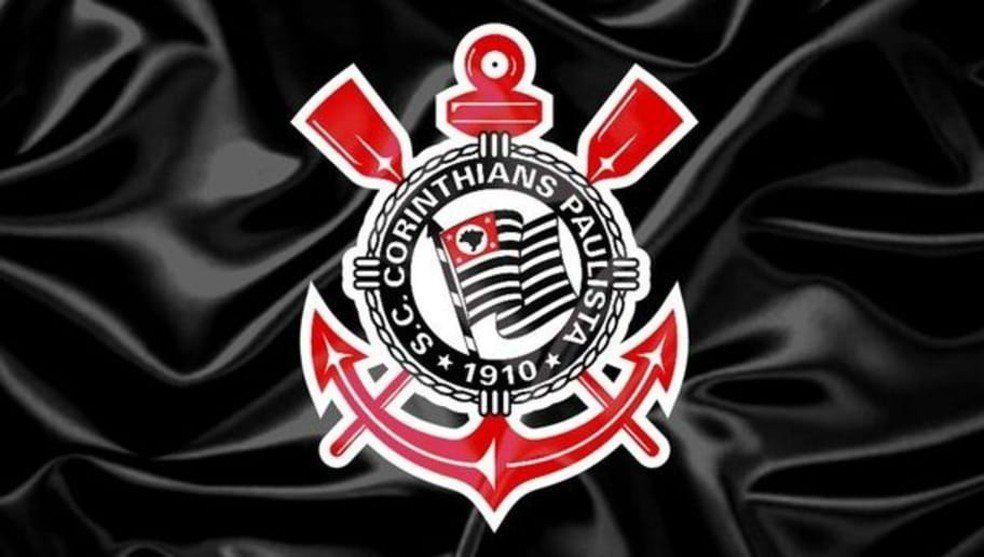
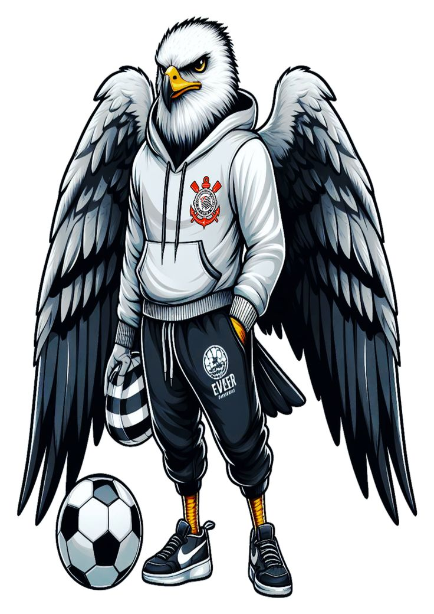

Bem-vindo ao Universo Corinthiano!
.jpg)
O Sport Club Corinthians Paulista é mais do que um time de futebol: é paixão, tradição e resistência. Fundado em 1910, o Timão conquistou o coração de milhões de torcedores e se tornou um dos maiores clubes do Brasil e do mundo. Aqui, você vai acompanhar notícias, curiosidades, títulos, ídolos e toda a energia da Fiel Torcida.
Uma trajetória de raça e glórias

O Corinthians nasceu no dia 1º de setembro de 1910, inspirado em um time inglês que passava pelo Brasil. De lá pra cá, o clube construiu uma história marcada por vitórias inesquecíveis, como a conquista da Libertadores e do Mundial de 2012, além de campeonatos brasileiros, paulistas e copas. O Timão representa a força do povo, sempre com a garra que virou marca registrada.
Nossos heróis dentro de campo
.jpg)
Ao longo da história, o Corinthians revelou e recebeu grandes craques. Nomes como Sócrates, Rivellino, Marcelinho Carioca, Casagrande, Ronaldo Fenômeno e Cássio entraram para sempre no coração da Fiel. Cada um deles contribuiu com talento, gols e momentos que jamais serão esquecidos.
As últimas do Timão
.jpg)
Aqui você encontra atualizações sobre jogos, escalações, contratações e bastidores. Fique por dentro das novidades do Corinthians, acompanhe o calendário de partidas e não perca nenhum detalhe da jornada alvinegra.
A Fiel: a maior do mundo

A torcida do Corinthians é reconhecida mundialmente pela paixão e pelo apoio incondicional. Não importa o placar ou a fase, a Fiel está sempre presente, lotando estádios e transformando cada jogo em uma festa única. Ser corinthiano é viver intensamente, é acreditar até o último minuto.